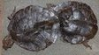

Special Reports
Arab Uprisings
In-depth coverage of political and social changes transforming the Middle East
More Special Reports:
BBC World Service
News and analysis in 27 languages
Languages continued (2 of 4)
Languages continued (3 of 4)
Languages continued (4 of 4)
Magazine
-
On the ball
Can a brain scan and table tennis reverse the effects of ageing?
-
Hotel Timbuktu
Out comes the buried beer, after 10 months of militant rule
Features
-
'Rent-a-boyfriend'
How China's singles stave off holiday wedding pressure
-
PR or super fan?
Mystery of the blog with intimate access to China's leader
-
Day in pictures
Twenty-four hours of news photos from around the world
-
Dinosaurs and dodos
How extinction has helped other creatures flourish
-
Scouts' honour
Gay brothers campaign to overturn 'indefensible' ban
-
Olympic effort
The families pushed aside by the Sochi steamroller
-
In pictures
Household technology that has reached the end of its life cycle
-
Deadly night
Too late for Siddiq the cough syrup addict
-
Photography pioneer
Man Ray's experimental portraits go on show
Analysis
-
Hewitt's Europe
Can the EU finally nail down a budget deal?
-
Jonny Dymond
John Brennan's CIA hearing will put US drones in spotlight

Market Data
Last Updated at 17:31 GMT
| Market index | Current value | Trend | Variation | % variation |
|---|---|---|---|---|
| Dow Jones | 13876.78 | Down | -109.74 | -0.78% |
| Nasdaq | 3147.19 | Down | -21.29 | -0.67% |
| FTSE 100 | 6228.42 | Down | -66.92 | -1.06% |
| Dax | 7590.85 | Up | 9.67 | 0.13% |
| Cac 40 | 3601.05 | Down | -41.85 | -1.15% |
| BBC Global 30 | 6570.15 | Down | -66.52 | -1.00% |
BBC World Service Podcasts
-
Discovery: Sexual Nature
Frolicking fossils and suggestive theories - the evolutionary history of sex
Programmes
-
HARDtalk
Hamas leader Khaled Meshaal says he is in talks with Fatah about forming a unity government
-
Talking Movies
Respected American director Steven Soderbergh bows out of cinema with a thriller
BBC World Service
World Briefing
BBC News reports from around the world.
Newshour
'Legal to kill Americans' memo leaked; UK votes for gay marriage; Aleppo's female sniper
Ads by Google
Best Web Hosting 2012
$1.95/mo + Free Domain Unlimited Disk Space & Bandwidth
Get the Benefits of Gmail
Without giving up your old email It is easy to switch to Gmail Now!
Singapore - iProperty.com
Your Dream Property Awaits, Search Singapore's No. 1 Property Site Now